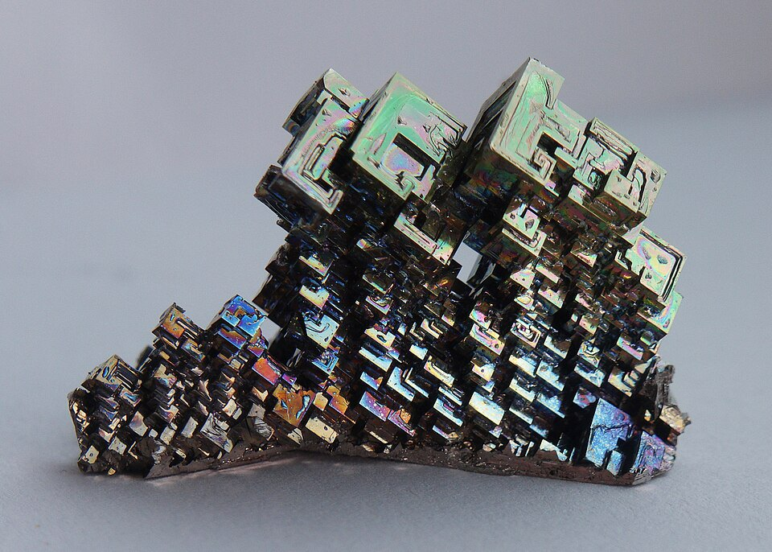

Materials and data ·
Why even a small alloy design space becomes large

Five elements and composition steps of five atomic percent sound manageable. Yet even this coarse description gives 10,626 possible compositions.
The difficulty is not simply making a longer spreadsheet. Every candidate may require preparation, heat treatment and characterization. The cost of exploring a design space depends on how many combinations we permit and what must be measured for each.
Count composition in small portions
Atomic percent, written at.%, is the fraction of atoms of one element expressed as a percentage. All component percentages must add to 100. With steps of 5 at.%, there are twenty portions to distribute among the elements.
A composition such as 10, 15, 10, 20 and 45 at.% uses 2, 3, 2, 4 and 9 portions. Their sum is twenty. Changing how these twenty portions are distributed changes the composition.
In this count, a component is allowed to have zero concentration. It therefore includes the edges and corners of the composition space as well as its interior. Not every counted candidate contains all the elements, and not every candidate is a stable or useful alloy.
Try changing the resolution
Count the candidates
Zero concentrations are permitted. These are mathematical candidates, not a list of viable alloys.
Why do the counts grow so quickly?
For n elements and q equal composition portions, the number of nonnegative integer compositions is (q + n − 1)! / [q!(n − 1)!]. Here n is the number of possible elements and q is 100 divided by the step size in at.%. All selectable step sizes divide 100 exactly.
This is a count of allowed combinations under specified rules. It does not account for solubility, phase stability, manufacturability or safety. Adding such restrictions can reduce the feasible set considerably. Requiring every component to be present also changes the counting problem.
Composition is only one choice
A material's properties depend on processing as well as composition. Suppose we consider four heat-treatment temperatures and five treatment durations. If every combination is permitted, these choices multiply the composition count by twenty.
The calculation below treats those choices as independent. Actual experiments may impose restrictions: a treatment might be unsuitable for one composition, or a process might require a particular sequence. In that case, we should count only feasible combinations.
Use data to choose the next experiment
A model can help identify promising candidates, estimate uncertainty and select measurements that distinguish competing explanations. This is more useful than ranking candidates by a predicted value alone.
For example, a candidate with a high predicted property but large uncertainty might warrant a measurement. Another candidate may have a slightly lower prediction that is supported by much more evidence. Which one to choose depends on the purpose: understanding the system, reducing risk, or seeking an improved material.
There is no universal number of experiments that guarantees success. Progress depends on the observations, the model, measurement noise and the constraints on the material. The point of counting is to understand why a deliberate experimental strategy matters, not to promise that an enormous search can always be solved with a handful of measurements.
How the interactive example is calculated
The composition count uses the binomial coefficient for distributing q indistinguishable portions among n components. The processing count multiplies it by the selected numbers of temperatures and durations. All quantities are exact integers for the offered controls.